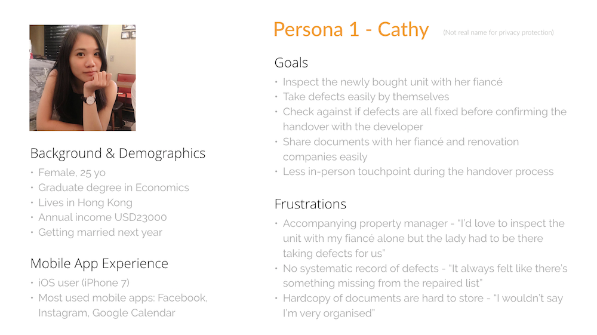
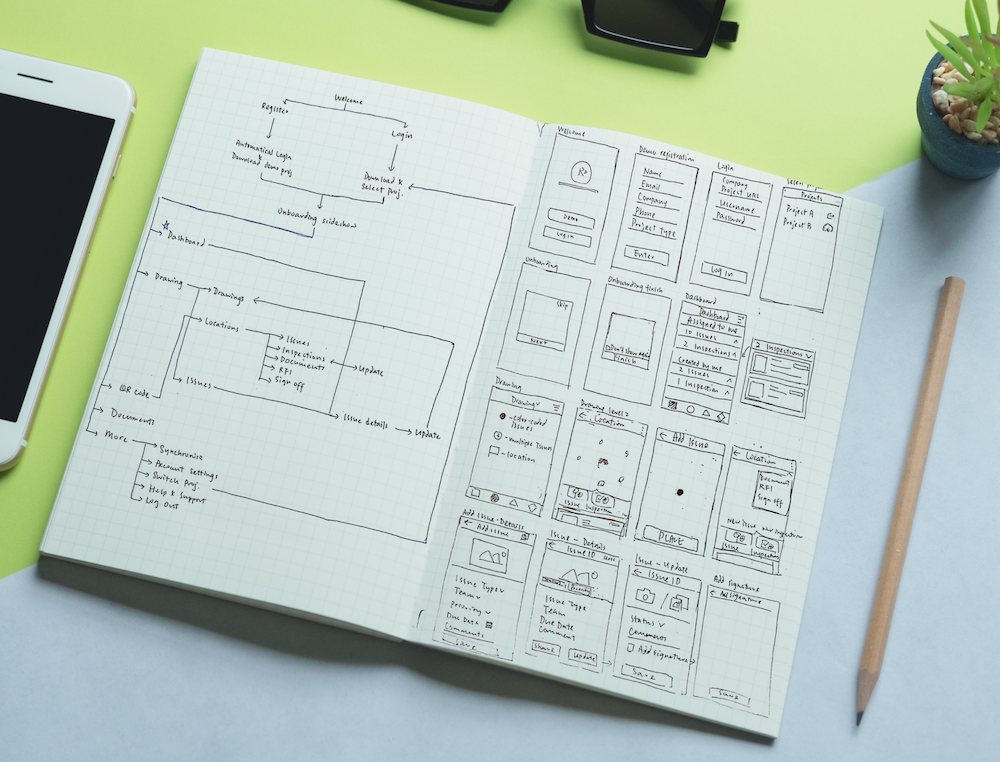
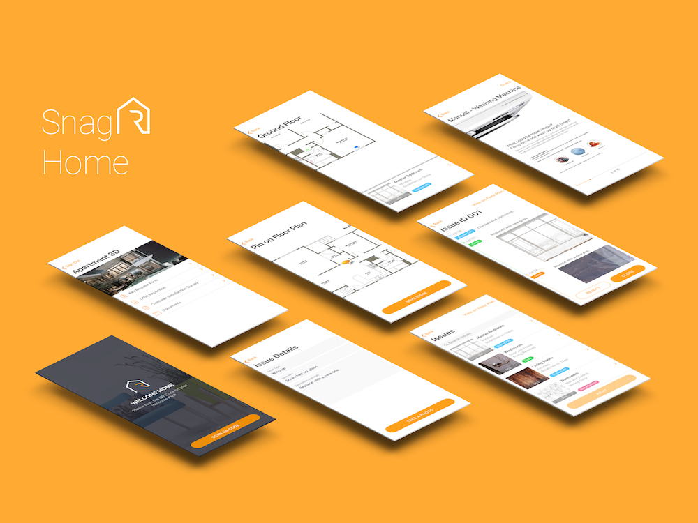

DEFINE Requirements
Business Requirements
SnagR Home is part of the construction management solution to be sold to real estate developers, while the primary users of the app are home owners. In brief, major stakeholders of the app include :-
- External Stakeholders
- Home Owners - to make the handover process easier and faster
- Property Managers - to reduce their workload by reducing manual steps
- Real Estate Developers (paying customers) - to save on-site staffing cost and improve customer satisfaction
- Internal Stakeholders
- Sales Team - to increase their stake to successfully sell the app to developers
- Client Excellence Team - to minimise training / support to be provided to users
Functional Requirements
Translating the above business requirements, the app has to be able to :-
- Add defects with photos to the Developer easily
- Be instantly notified on the defect-fixing progress
- Keep track of & submit forms as required
- Get access to floor plans, warranty cards, manuals and more
As the app will be released globally, users a.k.a. home owners are expected to come from different age groups, languages and technology adaptation level. Several personas were created to better understand their functional and non-functional requirements.
DESIGN User Flow
To test if the user flow is logical and intuitive, it is of utmost importance to create user flow diagram within minimal user interface design to avoid being distracted by the asethetics at this stage. Test the design by asking interviewees to complete tasks assigned to see if they know what buttons to tap on and record jackpots as well as drawbacks.

Apart from personas, I've conducted interviews with different stakeholders, including Home Owners, and colleagues from Sales and Client Excellence Teams from global offices. This process has been iterated for over 10 times before moving on to the next stage.
DESIGN User Interface
I used to create the user interface, and created a style guide for fast prototyping as well as for future reference for developers.
